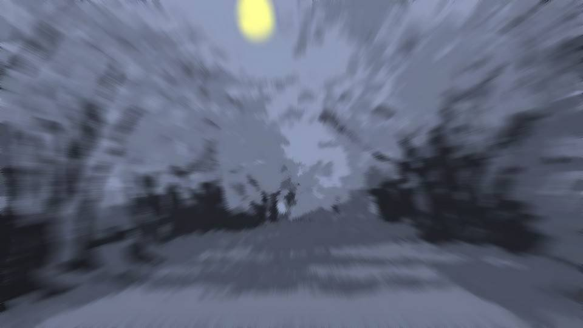

容疑者の悲鳴②

こんな勢いで立ちこぎをして自転車を走らせるなんて、何年振りだろうか。
本当に先輩が警察署に向かっているなら、1度警察署へ行き、そこから先輩の家に向かえば、間違いなく会えるはず。
本当に先輩が警察署に向かっているなら、1度警察署へ行き、そこから先輩の家に向かえば、間違いなく会えるはず。
相変わらず風はなく、月明かりは煌々と桜並木を照らしている。

警察署へは10分で着いた。先輩よりは早く警察署に着いたはず。
そこから先輩の家に方向を変え、すれ違わないように注意しながら、自転車を走らせる。
そこから先輩の家に方向を変え、すれ違わないように注意しながら、自転車を走らせる。
遠くにコンビニの明かりが見えてきた。
先輩は間違いなくこのルートを通る。
このコンビニの前で待ち伏せることにしよう。
先輩は間違いなくこのルートを通る。
このコンビニの前で待ち伏せることにしよう。

「あ……」
コンビニ前のベンチに腰掛ける人影。
ショートヘアの女の子だ。
あれは間違いない！
コンビニ前のベンチに腰掛ける人影。
ショートヘアの女の子だ。
あれは間違いない！

「先輩！」
自転車を放り出し、先輩のところへ駆け寄った。
自転車を放り出し、先輩のところへ駆け寄った。

「五島……？」
私を見て驚いている先輩の頭を抱きしめた。
何も言葉が出なかった。
私を見て驚いている先輩の頭を抱きしめた。
何も言葉が出なかった。
「はは……何しに来たんだよ……。面会にはまだ早いぞ？」
先輩の弱々しい声――その声を聞いて、私は先輩から体を離した。
泣き腫らしてぐしゃぐしゃの顔をした先輩は、上着も着ていない。
私は、着ていた上着を脱いで先輩に羽織らせた。
先輩の弱々しい声――その声を聞いて、私は先輩から体を離した。
泣き腫らしてぐしゃぐしゃの顔をした先輩は、上着も着ていない。
私は、着ていた上着を脱いで先輩に羽織らせた。
「帰りましょう、先輩。大丈夫ですから」
「帰るってどこへだよ。お母さんだって、娘でも人殺しの顔なんか見たくないだろ」
「じゃあ、私の家に帰りましょう」
先輩の顔から視線をそらさずに提案するが……。
「じゃあ、私の家に帰りましょう」
先輩の顔から視線をそらさずに提案するが……。
「バカかよ。私に殺されるかもしれないんだぞ？」
「でも…………」
「…………」
これ以上、まともに会話を続けられそうもない。
「でも…………」
「…………」
これ以上、まともに会話を続けられそうもない。
私はゆっくり先輩から離れ、1人でコンビニに入った。
2人分の温かい飲み物を買い、ベンチに戻る。
2人分の温かい飲み物を買い、ベンチに戻る。
「これ飲んで、落ち着いてください。お昼ご飯のお礼です」
私は先輩にニカッと笑いかけた。
私は先輩にニカッと笑いかけた。
先輩は私の顔をぼーっと見ながら、熱々のペットボトルを受け取った。
私は先輩の横に座り、自転車で冷えた両手をペットボトルで温める。
私は先輩の横に座り、自転車で冷えた両手をペットボトルで温める。
「どうして先輩が人殺しなんですか？」
「…………」
先輩の口から、大きな白い息が吐き出される。
どうもまだ、落ち着いていないようだ。
先輩の口から、大きな白い息が吐き出される。
どうもまだ、落ち着いていないようだ。
「どうして、警察に行かなかったんですか？」
質問を変えてみた。何か答えてくれるだろうか。
質問を変えてみた。何か答えてくれるだろうか。
「どうやって警察に話そうか、考えていた。
それにまだ、警察署だろ？ なつみは。私はなつみに近づいちゃいけないんだ」
四月八日に新村先輩は豹変するとでも言いたいのだろうか。
私は先輩の持つペットボトルを持ち、ふたを開けてあげた。
「すまん……」
そう言うと、先輩はペットボトルに口をつけた。
四月八日に新村先輩は豹変するとでも言いたいのだろうか。
私は先輩の持つペットボトルを持ち、ふたを開けてあげた。
「すまん……」
そう言うと、先輩はペットボトルに口をつけた。
「あっちい！」
先輩は小さな悲鳴を上げる。
「1番熱そうなのを選んできましたからね」
私は小さく笑いかけた。
先輩は小さな悲鳴を上げる。
「1番熱そうなのを選んできましたからね」
私は小さく笑いかけた。
「…………」
先輩はまたうつむいてしまった。なかなか話をしようとしてくれない。
先輩はまたうつむいてしまった。なかなか話をしようとしてくれない。
「五島、1人で帰れよ。風邪引くぞ？」
「私、朝になるまで先輩から離れませんよ」
「バカかよ……」
「私、朝になるまで先輩から離れませんよ」
「バカかよ……」

先輩は少しだけ顔を上げた。
「バカじゃありません！ 自他ともに認める天才少女です！」
「ふっ、バカかよ……」
先輩は一瞬だけ笑い顔を見せた。
それに合わせて、私も笑顔を作る。
ニカッとはせず、口角を上げる程度に。
「ふっ、バカかよ……」
先輩は一瞬だけ笑い顔を見せた。
それに合わせて、私も笑顔を作る。
ニカッとはせず、口角を上げる程度に。
「もう、先輩行きますよ！」
私は立ち上がってぐいっと先輩の腕を引っ張る。
私は立ち上がってぐいっと先輩の腕を引っ張る。
「バカ、何すんだよ！」
「もう私のことバカバカ言いすぎです！ 天才少女ですって！」
「やめろ！ バカかよ！」
「もう私のことバカバカ言いすぎです！ 天才少女ですって！」
「やめろ！ バカかよ！」

先輩は必死に抵抗している。
私も負けじと腕を引っ張る。
私も負けじと腕を引っ張る。
「何が人殺しですか！ こんなぐずぐずした意気地なしが、人殺す勇気あるんですか！」
先輩のお尻が浮き上がり、ズズっと靴がすれる。
先輩のお尻が浮き上がり、ズズっと靴がすれる。
「バカ！ 何も知らないで！」
先輩が一層力を込めると、浮いたお尻がまたベンチに着く。
「何も知らないから、話してって言ってるんじゃないですか！」
あきらめずに腕を引っ張る。
先輩が一層力を込めると、浮いたお尻がまたベンチに着く。
「何も知らないから、話してって言ってるんじゃないですか！」
あきらめずに腕を引っ張る。
「そんなの知ってどうするんだよ！」
「どうしてって、古郡先輩助けたいんでしょ！？ 私の力が必要なんでしょ！？」
「でも……！ お前に頼ったって……
「どうしてって、古郡先輩助けたいんでしょ！？ 私の力が必要なんでしょ！？」
「でも……！ お前に頼ったって……
そんな……」
急に先輩の抵抗が止まった。
それに合わせて、私も力を抜く。
急に先輩の抵抗が止まった。
それに合わせて、私も力を抜く。
「でも……。五島の家には行けない。家、誰もいないんだろ？」
「いますよ。私が家を出るとき、ちょうどお姉ちゃんが帰ってきたんで」
「…………」
もう、嘘で通すしかない。
でも、これは許される嘘だ。自分のためではなく、先輩のための嘘だ。
「いますよ。私が家を出るとき、ちょうどお姉ちゃんが帰ってきたんで」
「…………」
もう、嘘で通すしかない。
でも、これは許される嘘だ。自分のためではなく、先輩のための嘘だ。
「ほら、先輩」
もう一度先輩の腕を引っ張った。
もう一度先輩の腕を引っ張った。
もう抵抗する様子はなかった。
「五島……お前は、私が怖くないのか？ 私、なつみのお父さんを……」
「新村先輩は、私を殺したいんですか？」
「ち、違う！ 私は……私は、誰も殺したくない……！」
「新村先輩は、私を殺したいんですか？」
「ち、違う！ 私は……私は、誰も殺したくない……！」
「だったら怖くありません。どうして先輩を怖がらないといけないんですか？
四月八日は、先輩がオオカミ男みたいに豹変する日なんですか？」
「それは…… そうじゃないけどさ……」
「それは…… そうじゃないけどさ……」

空に浮かぶ大きな月――今日、祀耀800年四月八日は満月だ。
西洋の国のどこかでオオカミ男が出ているのかもしれないが、この元木町ではそんなことは起きていない。
西洋の国のどこかでオオカミ男が出ているのかもしれないが、この元木町ではそんなことは起きていない。
私たちは、各々の自転車にまたがる。
「先輩が先に行ってください」
「何でだよ……」
「逃げないように、見張らないといけないですから」
「…………」
新村先輩は無言で自転車を発進させた。
「先輩が先に行ってください」
「何でだよ……」
「逃げないように、見張らないといけないですから」
「…………」
新村先輩は無言で自転車を発進させた。
Read ✓ Next in this arc →